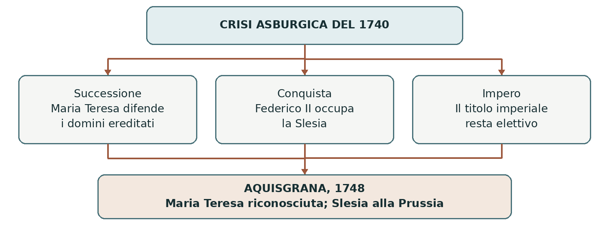

1740–1748 • Maria Teresa e la sfida prussiana
La guerra di successione austriaca
La successione di Maria Teresa ai domini asburgici fu l’occasione per un nuovo conflitto. La guerra rivelò l’emergere della Prussia come rivale dell’Austria nello spazio tedesco e la fragilità delle garanzie diplomatiche.
0. Domanda generatrice
Perché una successione già riconosciuta dalle potenze fu contestata con le armi?
In sintesi Le promesse diplomatiche cedettero di fronte alla possibilità di conquistare territori e modificare i rapporti di forza.
1. Il mondo precedente
La monarchia asburgica riuniva territori differenti, fra i quali Austria, Boemia e Ungheria, ciascuno con
proprie istituzioni. Nel 1713 l’imperatore Carlo VI, allora ancora senza figli, emanò la Prammatica
Sanzione: stabiliva l’indivisibilità dei domini e ammetteva, in mancanza di eredi maschi della sua linea, la
successione femminile. Maria Teresa sarebbe nata nel 1717.
Carlo VI ottenne progressivamente il riconoscimento della nuova regola da parte dei corpi politici interni e
delle potenze straniere. Intanto la Prussia degli Hohenzollern aveva costruito un esercito efficiente e
un’amministrazione capace di sostenerlo. Il suo nuovo re, Federico II, salito al trono nel 1740, intendeva
trasformare queste risorse in potenza territoriale.
In sintesi La successione femminile era stata preparata, ma la monarchia asburgica restava esposta alle ambizioni dei vicini.
2. Le fratture
Nel 1740 Carlo VI morì e Maria Teresa ereditò i domini asburgici. Alcuni sovrani contestarono i suoi
diritti o appoggiarono candidature rivali. Nel dicembre dello stesso anno Federico II invase la Slesia, ricca
di manifatture e risorse: la Prussia cercava un’annessione, non la sostituzione di Maria Teresa con un
proprio re d’Austria.
Occorre distinguere i domini asburgici dalla dignità di imperatore del Sacro Romano Impero, che era
elettiva. Maria Teresa poteva ereditare i primi, ma non il titolo imperiale. La crisi consentì all’elettore di
Baviera, Carlo Alberto, di aspirare alla corona imperiale e di sfidare gli Asburgo con l’appoggio francese.
In sintesi La crisi intrecciò tre questioni: eredità asburgica, conquista della Slesia ed elezione imperiale.
3. Attori, gruppi e conflitti
Gli schieramenti mutarono durante la guerra. La tabella riassume le posizioni principali, senza considerarli blocchi immutabili.
| Attori | Obiettivi e interessi |
|---|---|
| Maria Teresa | Difendere i domini; ottenere risorse e appoggio dalle élite dei diversi territori. |
| Federico II di Prussia | Conquistare e conservare la Slesia, aumentando il peso della Prussia. |
| Francia, Baviera e Spagna | Indebolire gli Asburgo; perseguire vantaggi dinastici e territoriali in Germania e Italia. |
| Gran Bretagna, Province Unite e Sardegna | Sostenere l’Austria e contenere Francia e Borbone; tutelare i propri interessi strategici. |
In sintesi La difesa di un diritto dinastico si unì a rivalità territoriali, commerciali e militari.
4. Il processo storico
La sopravvivenza della monarchia asburgica
Maria Teresa dovette fronteggiare invasioni e difficoltà finanziarie. Nel 1741 ottenne un importante sostegno dagli Stati del Regno d’Ungheria, cioè dalle assemblee degli ordini privilegiati. La difesa della monarchia richiese negoziati e concessioni, non soltanto decisioni imposte dall’alto.
Nel 1742 Carlo Alberto di Baviera fu eletto imperatore come Carlo VII. Gli Asburgo riuscirono però a
resistere e a recuperare posizioni in Boemia e in Baviera. Alla morte di Carlo VII, nel 1745, venne eletto
imperatore il marito di Maria Teresa, Francesco Stefano di Lorena, con il nome di Francesco I. Maria
Teresa rimase la sovrana effettiva dei propri domini.
La Slesia e gli altri fronti
Federico II condusse due guerre per assicurarsi la Slesia, nel 1740–1742 e nel 1744–1745, all’interno del
conflitto generale. Seppe alternare azione militare e accordi separati. La conquista accrebbe popolazione,
risorse e prestigio della Prussia, rendendola una concorrente stabile dell’Austria.
La guerra coinvolse i Paesi Bassi austriaci, dove la Francia ottenne successi, e l’Italia, dove si scontrarono interessi asburgici, borbonici e sabaudi. Dal 1744 la guerra aperta tra Francia e Gran Bretagna si estese inoltre al Nord America e all’India: già questo conflitto aveva quindi una dimensione coloniale.
Aquisgrana: riconoscimento e perdita territoriale
La pace di Aquisgrana del 1748 riconobbe la successione di Maria Teresa ai domini asburgici. L’Austria
dovette però accettare il possesso prussiano della Slesia, già sancito dagli accordi precedenti. La continuità
dinastica fu salvata a prezzo di una perdita territoriale molto importante.
In Italia Parma, Piacenza e Guastalla passarono a Filippo di Borbone, fratello di Carlo, re di Napoli e
Sicilia. Il Regno di Sardegna consolidò guadagni sul confine lombardo. La Francia restituì le conquiste nei
Paesi Bassi austriaci. Numerosi territori occupati furono dunque restituiti per ricostruire un equilibrio
accettabile.
In sintesi Maria Teresa conservò la monarchia; Federico II conservò la Slesia. La pace non cancellò la rivalità tra Austria e Prussia.
Lo snodo decisivo
La perdita della Slesia trasformò una crisi di successione in una rivalità duratura. Per Maria Teresa recuperarla sarebbe diventato un obiettivo centrale della politica estera.
5. Le fonti in dialogo
La Prammatica Sanzione del 1713
È un atto dinastico e giuridico di Carlo VI, precedente alla nascita di Maria Teresa. Il portale storico dei palazzi asburgici ne ricostruisce contenuto e finalità.
Contenuto — sintesi didattica: I domini della casa d’Austria devono restare uniti; la successione è regolata in modo da permettere il passaggio alle discendenti femmine quando manchino eredi maschi della linea prevista.
Interpretazione e limiti: L’atto stabilisce una norma e un progetto di continuità. Non garantisce che gli altri sovrani li rispetteranno: il riconoscimento giuridico e la capacità militare di difenderlo sono piani distinti.
Domanda di lettura: Perché la data del 1713 impedisce di presentare l’atto come una decisione presa dopo la nascita di Maria Teresa?
Fonte e contesto: Habsburger.net — Charles VI and the Pragmatic Sanction
In sintesi Una norma chiarisce le pretese degli attori, ma non predetermina l’esito del conflitto.
6. Conseguenze e nuovo assetto
L’Austria avviò un rafforzamento dell’amministrazione, del fisco e dell’esercito. La guerra aveva mostrato che la sopravvivenza della monarchia richiedeva risorse più affidabili e un maggiore coordinamento tra territori.
La Prussia entrò stabilmente nel gruppo delle grandi potenze. L’insoddisfazione austriaca per la perdita della Slesia contribuì al cambiamento delle alleanze del 1756, quando Austria e Francia si avvicinarono. Una nuova guerra non era inevitabile, ma i motivi di conflitto restavano aperti.
In sintesi L’ascesa prussiana si accompagnò alla riorganizzazione asburgica e a nuovi negoziati diplomatici.
7. Conclusione
La successione fu riconosciuta, ma l’equilibrio cambiò. L’efficacia dell’esercito prussiano prevalse sulle garanzie precedenti e fece della Slesia il centro della competizione tra due potenze tedesche.
Sintesi finale 1713: Carlo VI regola la successione con la Prammatica Sanzione. 1740: Maria Teresa eredita; Federico II invade la Slesia. La successione asburgica è distinta dall’elezione imperiale. 1748: Aquisgrana riconosce Maria Teresa e la Slesia prussiana. La rivalità austro-prussiana ridisegna la politica europea.
Per studiare e collegare
Coordinate essenziali
Domini asburgici, Slesia, Germania, Paesi Bassi e Italia; fronti coloniali anglo-francesi. Antefatto nel 1713, guerra dal 1740 al 1748.
Saperi irrinunciabili
1. La Prammatica Sanzione risale al 1713, non al 1717.
2. Maria Teresa nacque nel 1717 ed ereditò nel 1740.
3. I domini asburgici non coincidevano con il Sacro Romano Impero.
4. La carica imperiale era elettiva.
5. Federico II invase la Slesia nel dicembre 1740.
6. Maria Teresa ottenne il sostegno degli Stati ungheresi.
7. Carlo VII fu imperatore dal 1742 al 1745.
8. Francesco I, marito di Maria Teresa, fu eletto nel 1745.
9. Aquisgrana riconobbe la successione e la Slesia prussiana.
10. Il conflitto rafforzò la rivalità tra Austria e Prussia.
Mappa concettuale

Tre questioni intrecciate producono un compromesso: continuità asburgica e crescita prussiana.
Strumenti e attività
Linea del tempo ragionata
| Quando | Che cosa cambia |
|---|---|
| 1713 | Prammatica Sanzione: indivisibilità e successione femminile. |
| 1740 | Morte di Carlo VI; Maria Teresa erede; invasione della Slesia. |
| 1741–1742 | Appoggio ungherese; Carlo VII eletto imperatore. |
| 1744–1745 | Seconda guerra di Slesia; conflitto anche nelle colonie. |
| 1745 | Francesco I eletto imperatore. |
| 1748 | Pace di Aquisgrana: Maria Teresa riconosciuta, Slesia prussiana. |
Vocabolario essenziale
Prammatica Sanzione. Atto sovrano che disciplina una questione fondamentale dello Stato.
Monarchia composita. Territori con istituzioni differenti uniti da uno stesso sovrano.
Stati o ordini. Corpi privilegiati rappresentati nelle assemblee di un territorio.
Slesia. Regione dell’Europa centro-orientale contesa da Austria e Prussia.
Attività di comprensione
1. Distingui i titoli e i poteri di Maria Teresa da quelli di Francesco I.
2. Spiega perché il riconoscimento della Prammatica Sanzione non impedì la guerra.
3. Confronta obiettivi iniziali e risultati finali di Austria e Prussia.
Fonti e approfondimenti
Lezione di riferimento: «moderna.ppt», diapositiva 15. I collegamenti seguenti permettono di leggere la fonte e approfondire i passaggi centrali.
National Army Museum — War of the Austrian Succession
Habsburger.net — La Prammatica Sanzione del 1713